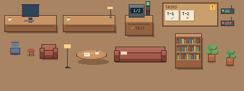
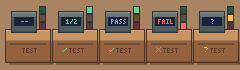

Environment Design Sheet — Concept A
16px 그리드, 바닥 y=84~258, 벽 높이 84px. 모든 가구는 같은 3/4 시점(윗면 + 앞면), 왼쪽 위 광원, 그림자는 오른쪽 아래로 3px.
오브젝트 키트 (×3)

책상(모니터형·스탠드형), 검증 캐비닛, 상태 보드, LINK 장치(연결/끊김), 의자, 스툴, 안락의자, 플로어 램프, 원형 공용 테이블, 소파, 책장, 화분.
검증 장치 상태 (×3): 없음 · 부분 · 통과 · 실패 · 종료 미확인

상태는 화면 글자 + 켜진 램프 위치(위 통과 / 가운데 확인 필요 / 아래 실패) + 기호로 표시한다. 색만으로 구분하지 않는다. 이 장치는 기록된 결과를 보여 준다. 실행 중 진행 표시는 snapshot@1에 없어서 그리지 않는다.
공간 구역·가림 (×2)

| 구역 | 목적 | 상태 연결 |
|---|---|---|
| Codex Station | Codex 펫의 정체성 공간 (모니터, >_ 포스터) | 없음 — 존재 자체가 Worker 작업이 아님 |
| Claude Station | Claude 펫의 정체성 공간 (스탠드, 책, 선반) | 없음 |
| Verification Station | 검증 기록의 환경 오브젝트 | tasks[].checks[].state, mood failed / end_unknown |
| Status Board | 작업 카드·확인 요청 깃발·승인 표식 | tasks, requests, review.state |
| LINK | Runtime 연결만 | runtime.health |
| Shared table | 두 펫이 만나는 공용 공간 (장식) | 없음 |
| Lounge / Nook | 대기·휴식 동선의 끝 | mood idle·ready에서 휴식 |
깊이 정렬: 모든 오브젝트와 펫은 바닥선(발 위치 / 가구 앞면 아래)이 작을수록 먼저 그린다. 벽 부착물(창·보드·포스터·LINK)은 항상 바닥 오브젝트보다 뒤.